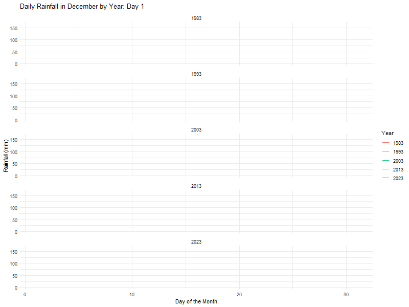
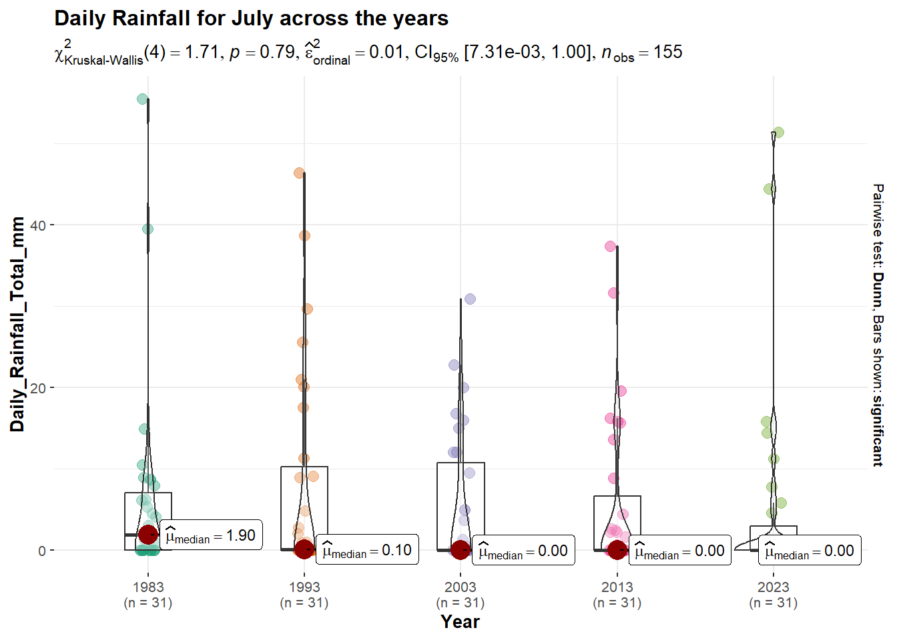
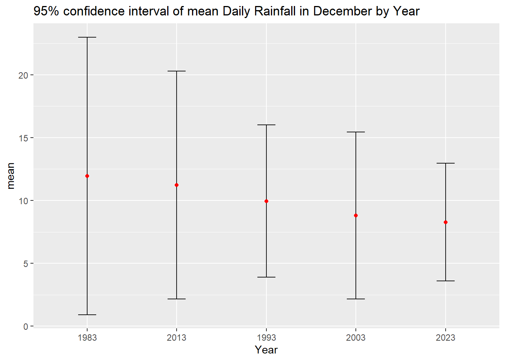
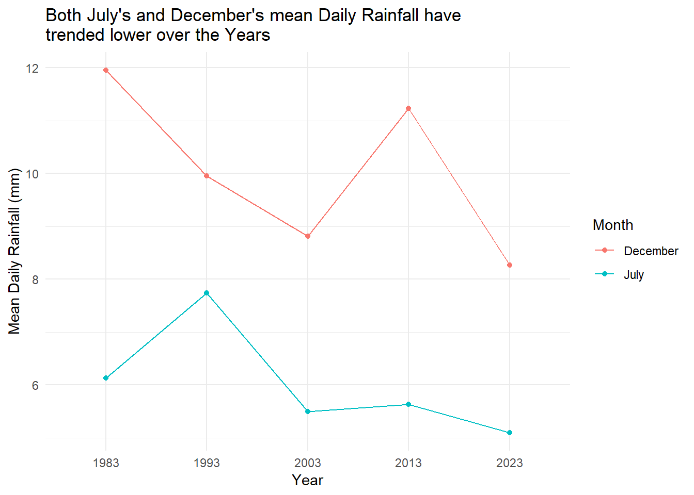

pacman::p_load(ungeviz, plotly, crosstalk, patchwork,
DT, ggdist, ggridges, ggstatsplot,
colorspace, gganimate, tidyverse, dplyr,
readr, ggiraph)Take-Home Exercise 3 - Be Weatherwise or Otherwise
1. Overview
According to an official report as shown in the infographic below,
Daily mean temperatures are projected to increase by 1.4 to 4.6, and
The contrast between the wet months (November to January) and dry month (February and June to September) is likely to be more pronounced.

2. The Task
As a visual analytics greenhorn, we are keen to apply newly acquired visual interactivity and visualising uncertainty methods to validate the claims presented above.
In this take-home exercise, we are required to:
Select a weather station and download historical daily temperature or rainfall data from Meteorological Service Singapore website,
Select either daily temperature or rainfall records of a month of the year 1983, 1993, 2003, 2013 and 2023 and create an analytics-driven data visualisation,
Apply appropriate interactive techniques to enhance the user experience in data discovery and/or visual story-telling.
2.1 Installing and Loading R packages
2.2 Importing Data and Data Preparation
I will download and import data for July (Dry) and December (Wet) for 1983, 1993, 2003, 2013, 2023.
I have chosen Changi weather station, as it is one of the older weather stations with complete historical data for both daily rainfall and mean,max and min temperatures. For more information on the weather stations and the data period available, please refer to this link.
Additionally, I have chosen the months of July and December as they both have 31 days of data.
Show the code
# List of file names
December_files <- c("data/DAILYDATA_S24_198312.csv", "data/DAILYDATA_S24_199312.csv",
"data/DAILYDATA_S24_200312.csv", "data/DAILYDATA_S24_201312.csv",
"data/DAILYDATA_S24_202312.csv")
July_files <- c("data/DAILYDATA_S24_198307.csv", "data/DAILYDATA_S24_199307.csv",
"data/DAILYDATA_S24_200307.csv", "data/DAILYDATA_S24_201307.csv",
"data/DAILYDATA_S24_202307.csv")Upon inspecting the csv files for the 5 years, the below columns contain missing data for 4 out of the 5 years:
Highest 30-min Rainfall (mm)
Highest 60-min Rainfall (mm)
Highest 120-min Rainfall (mm)
Therefore, these columns will be excluded as we import the csv files into our R environment
Show the code
# Reading and combining the CSV files, by "stacking vertically"
December_data <- lapply(December_files, read_csv, col_names = FALSE,
col_select = c(1, 2, 3, 4, 5, 9, 10, 11, 12, 13),
skip = 1) %>%
bind_rows(.id = "file")Show the code
# Reading and combining the CSV files, by "stacking vertically"
July_data <- lapply(July_files, read_csv, col_names = FALSE,
col_select = c(1, 2, 3, 4, 5, 9, 10, 11, 12, 13),
skip = 1) %>%
bind_rows(.id = "file")Renaming the column names
Show the code
# Renaming the columns
colnames(December_data) <- c("ID", "Station", "Year", "Month", "Day",
"Daily_Rainfall_Total_mm", "Mean_Temperature_C",
"Maximum_Temperature_C", "Minimum_Temperature_C",
"Mean_Wind_Speed_km_h", "Max_Wind_Speed_km_h")
December_data$Year <- as.factor(December_data$Year)Show the code
# Renaming the columns
colnames(July_data) <- c("ID", "Station", "Year", "Month", "Day",
"Daily_Rainfall_Total_mm", "Mean_Temperature_C",
"Maximum_Temperature_C", "Minimum_Temperature_C",
"Mean_Wind_Speed_km_h", "Max_Wind_Speed_km_h")
July_data$Year <- as.factor(July_data$Year)2.2.1 Inspecting the data for July
head(July_data)# A tibble: 6 × 11
ID Station Year Month Day Daily_Rainfall_Total_mm Mean_Temperature_C
<chr> <chr> <fct> <dbl> <dbl> <dbl> <dbl>
1 1 Changi 1983 7 1 8.7 27.5
2 1 Changi 1983 7 2 0 28.7
3 1 Changi 1983 7 3 5.3 27.9
4 1 Changi 1983 7 4 6.2 28
5 1 Changi 1983 7 5 39.5 25.4
6 1 Changi 1983 7 6 14.9 27.1
# ℹ 4 more variables: Maximum_Temperature_C <dbl>, Minimum_Temperature_C <dbl>,
# Mean_Wind_Speed_km_h <dbl>, Max_Wind_Speed_km_h <dbl>DT::datatable(July_data, class= "compact")2.2.2 Inspecting the data for December
head(December_data)# A tibble: 6 × 11
ID Station Year Month Day Daily_Rainfall_Total_mm Mean_Temperature_C
<chr> <chr> <fct> <dbl> <dbl> <dbl> <dbl>
1 1 Changi 1983 12 1 2.8 26.4
2 1 Changi 1983 12 2 1.7 24.3
3 1 Changi 1983 12 3 5 25.1
4 1 Changi 1983 12 4 8.2 25.2
5 1 Changi 1983 12 5 0 26
6 1 Changi 1983 12 6 0 25
# ℹ 4 more variables: Maximum_Temperature_C <dbl>, Minimum_Temperature_C <dbl>,
# Mean_Wind_Speed_km_h <dbl>, Max_Wind_Speed_km_h <dbl>DT::datatable(December_data, class= "compact")3. Visualising daily rainfall from 1983 to 2023
3.1 Visualising Daily Rainfall for the month of July (Dry month) over the years
First, I will plot a line plot that compares daily rainfall in July over the 5 years.
Show the code
p_july <- ggplot(July_data, aes(x = Day, y = Daily_Rainfall_Total_mm, color = Year)) +
geom_line() +
facet_wrap(~Year, ncol = 1) +
labs(title = "Daily Rainfall in July by Year",
x = "Day of the Month",
y = "Rainfall (mm)",
color = "Year") +
theme_minimal() # Optional: Adds a minimalistic themeggplotly(p_july)3.1.1 Visualising through animation
Show the code
p_july1 <- ggplot(July_data, aes(x = Day, y = Daily_Rainfall_Total_mm, group = Year, color = Year)) +
geom_line() +
facet_wrap(~Year, ncol = 1) +
labs(title = "Daily Rainfall in July by Year: Day {frame_along}",
x = "Day of the Month",
y = "Rainfall (mm)",
color = "Year") +
theme_minimal() +
transition_reveal(Day) + # Animate the line drawing across days
ease_aes('linear')
# Animate and display the plot
animate(p_july1, nframes = 31, fps = 5, width = 800, height = 600)
Note
From the combined interactive plot above, there seems to be some difference in the daily rainfall for the month of July across the years, in terms of number of rain days and daily rain intensity.
For example, 2023’s daily rainfall intensity seems stronger compared to previous years, but the number of rain days is also lesser.
3.2 Visualising Daily Rainfall for the month of December (Wet month) over the years
First, I will plot a line plot that compares daily rainfall in December over the 5 years.
Show the code
p_dec <- ggplot(December_data, aes(x = Day, y = Daily_Rainfall_Total_mm, color = Year)) +
geom_line() +
facet_wrap(~Year, ncol = 1) +
labs(title = "Daily Rainfall in December by Year",
x = "Day of the Month",
y = "Rainfall (mm)",
color = "Year") +
theme_minimal() # Optional: Adds a minimalistic themeggplotly(p_dec)3.2.1 Visualising through animation
Show the code
p_dec1 <- ggplot(December_data, aes(x = Day, y = Daily_Rainfall_Total_mm, group = Year, color = Year)) +
geom_line() +
facet_wrap(~Year, ncol = 1) +
labs(title = "Daily Rainfall in December by Year: Day {frame_along}",
x = "Day of the Month",
y = "Rainfall (mm)",
color = "Year") +
theme_minimal() +
transition_reveal(Day) + # Animate the line drawing across days
ease_aes('linear')
# Animate and display the plot
animate(p_dec1, nframes = 31, fps = 5, width = 800, height = 600)
Note
From the combined interactive plot above, there seems to be some difference in the daily rainfall for the month of December across the years, in terms of number of rain days and daily rain intensity.
For example, among the 5 years, the heaviest rainfall event happened in 1983. While the intensity of the daily rainfall in 2023 seems to be the weakest relative to the previous years.
3.3 Comparing both July and December Daily Rainfall over the years (Dry Vs Wet month)
First we combine the July and December data sets.
Show the code
July_data$Month <- 'July'
December_data$Month <- 'December'combined_data <- rbind(July_data, December_data)head(combined_data)# A tibble: 6 × 11
ID Station Year Month Day Daily_Rainfall_Total_mm Mean_Temperature_C
<chr> <chr> <fct> <chr> <dbl> <dbl> <dbl>
1 1 Changi 1983 July 1 8.7 27.5
2 1 Changi 1983 July 2 0 28.7
3 1 Changi 1983 July 3 5.3 27.9
4 1 Changi 1983 July 4 6.2 28
5 1 Changi 1983 July 5 39.5 25.4
6 1 Changi 1983 July 6 14.9 27.1
# ℹ 4 more variables: Maximum_Temperature_C <dbl>, Minimum_Temperature_C <dbl>,
# Mean_Wind_Speed_km_h <dbl>, Max_Wind_Speed_km_h <dbl>DT::datatable(combined_data, class= "compact")3.3.1 Plotting both months to compare differences across years
I will plot both months for each year to make a side by side comparison between July (Dry) and December (Wet) over the 5 years.
Show the code
p_combined <- ggplot(combined_data, aes(x = Day,
y = Daily_Rainfall_Total_mm, group = Month)) +
# Use geom_area for one of the months, July in this case
geom_area(data = subset(combined_data, Month == "July"),
aes(fill = as.factor(Year)), alpha = 0.3) +
# Use geom_line for both months to ensure the line is on top of the fill
geom_line(aes(color = as.factor(Year),
linetype = Month)) +
facet_wrap(~Year, ncol = 1) +
labs(title = "Daily Rainfall in July and December by Year",
x = "Day of the Month",
y = "Rainfall (mm)",
color = "Year",
fill = "Year",
linetype = "Month") +
theme_minimal() +
guides(fill = guide_legend("Year"), color = guide_legend("Year"),
linetype = guide_legend("Month"))p_combined
Making it interactive using ggploty() method.
Show the code
p3 <- ggplot(combined_data, aes(x = Day, y = Daily_Rainfall_Total_mm)) +
# Use geom_line for both months, specifying linetype based on Month
geom_line(aes(color = Year, linetype = Month)) +
facet_wrap(~Year, ncol = 1) +
labs(title = "Daily Rainfall in July and December by Year",
x = "Day of the Month",
y = "Rainfall (mm)",
color = "Year",
linetype = "Month") +
theme_minimal() +
guides(fill = guide_legend("Year"), color = guide_legend("Year"),
linetype = guide_legend("Month"))
# Adjust linetype manually for clarity
p_combined <- p_combined + scale_linetype_manual(values = c("July" = "dotted", "December" = "solid"))ggplotly(p3)3.3.2 Visualising through Animation
I will also animate the combined plot of July and December Daily rainfall across the years, using gganimate.
Show the code
# Adjusted plot code without geom_area
p_combined_simple <- ggplot(combined_data,
aes(x = Day,
y = Daily_Rainfall_Total_mm,
group = interaction(Month, Year),
color = Year)) +
geom_line(aes(linetype = Month)) +
facet_wrap(~Year, ncol = 1) +
labs(title = "Daily Rainfall in July and December by Year: Day {frame_along}",
x = "Day of the Month",
y = "Rainfall (mm)",
color = "Year",
linetype = "Month") +
theme_minimal() +
guides(color = guide_legend("Year"), linetype = guide_legend("Month"))
# Simplify the animation using transition_reveal for Day
animated_plot_simple <- p_combined_simple +
transition_reveal(Day) +
ease_aes('linear')
# Render the animation
animate(animated_plot_simple, nframes = 31, fps = 5, width = 800, height = 600)
Observation 1
The infographics had reported that:-
The contrast between wet months (Nov to Jan) and dry months (Feb and June to Sep) is likely to be more pronounced.
Intensity and frequency of heavy rain fall events is expected to increase as the world gets warmer.
From the visualisations above, while there are visibly more rainy days in December relative to July over the years, there seems to be no substantial increase in the intensity and frequency of heavy rain events from 1983.
For example, the highest recorded daily rainfall was in December 1983 at 164.4 mm, which has not yet been eclipsed.
Similarly, overall volume of rainfall in both July and December 2023 seems to be the least within the 5 years.
4. Analysing statistical differences between months and years
4.1 Differences between same months across the years
Our previous visualisations seem to indicate that there are some differences in the daily rainfall for each of the months July and December, across the 5 years ie the difference between each July/December of 1983, 1993, 2003, 2013 and 2023.
We will validate this statistically. We will use ggstatsbetween() from the ggstatplot package to examine if there are any significant statistical differences between the median daily rainfall for the same month across the five years.
First, we will need to ascertain the nature of the distribution, whether it is normal or non-normal distributed.
shapiro.test(July_data$Daily_Rainfall_Total_mm)
Shapiro-Wilk normality test
data: July_data$Daily_Rainfall_Total_mm
W = 0.61704, p-value < 2.2e-16shapiro.test(December_data$Daily_Rainfall_Total_mm)
Shapiro-Wilk normality test
data: December_data$Daily_Rainfall_Total_mm
W = 0.51023, p-value < 2.2e-16For both July and December daily rainfall data, the p-value is < 0.05. Hence we can conclude that the distribution of data is non-normal. We will need to conduct non-parametric tests.
Our Hypothesis will be as such:
H0: There is no difference between the median daily rainfall for the same month across the 5 years.
H1: There is a difference between the median daily rainfall for the same month across the 5 years.
Show the code
ggbetweenstats(
data = July_data,
x = Year,
y = Daily_Rainfall_Total_mm,
type = "np",
mean.ci = TRUE,
pairwise.comparisons = TRUE,
pairwise.display = "s",
p.adjust.method = "fdr",
messages = FALSE
) +
ggtitle("Daily Rainfall for July across the years")
Show the code
ggbetweenstats(
data = December_data,
x = Year,
y = Daily_Rainfall_Total_mm,
type = "np",
mean.ci = TRUE,
pairwise.comparisons = TRUE,
pairwise.display = "s",
p.adjust.method = "fdr",
messages = FALSE
) +
ggtitle("Daily Rainfall for December across the years")
Observation 2
In both tests, the p-value is above 0.05. Hence we have insufficient evidence to reject the Null Hypothesis and can conclude that there is no strong evidence to indicate that there is a difference in the median daily rainfall for the same month across the years.
4.2 Differences between the two months across the years
Our previous visualisations seem to suggest that there is no substantial differences in the daily rainfall between the months of July and December, across the 5 years ie the difference/variation between the two months (July and December) for each of the 5 years.
We will validate this statistically. We will examine if there is any strong evidence to suggest that there is indeed a difference in the median daily rainfall between the two months (July and December).
Our Hypothesis will be as such:
H0: There is no difference in the median daily rainfall between July and December.
H1: There is a difference in the median daily rainfall between July and December.
Since we have rain fall data for 5 different years, we will use the grouped_ggbetweenstats() from the ggstatplot package.
grouped_ggbetweenstats(
data = combined_data,
x = Month,
y = Daily_Rainfall_Total_mm,
grouping.var = Year,
type = "np", # for non-parametric
pairwise.comparisons = TRUE,
pairwise.display = "s",
p.adjust.method = "fdr",
output = "plot"
)
Observation 3
In the 5 tests, the p-value is > 0.05 for years 1983,1993,2003 and 2013.
However the p-value is < 0.05 for year 2023.
Hence we can reject the Null Hypothesis and can conclude that there is some evidence to indicate that there is a difference in the median daily rainfall between December and July across the 5 years.
While there were no significant differences from 1983 to 2013. This is not the case for 2023.
Let’s show this by plotting the number of Rainy days and the mean daily Rainfall across the years
Show the code
rain_fall_summary <- combined_data %>%
group_by(Year, Month) %>%
summarize(
MeanRainfall = mean(Daily_Rainfall_Total_mm, na.rm = TRUE),
RainyDays = sum(Daily_Rainfall_Total_mm > 0, na.rm = TRUE), # Count days with rain
.groups = 'drop'
)Show the code
p4 <- ggplot(rain_fall_summary, aes(x = Year, y = RainyDays, group = Month, color = Month)) +
geom_line() +
geom_point() +
facet_wrap(~Month) + # Separate plots for each month
labs(title = "Number of Rainy Days Over Years",
x = "Year",
y = "Number of Rainy Days",
color = "Month") +
theme_minimal() +
theme(legend.position = "none")
ggplotly(p4)
Note
With reference to our previous tests which showed a statistically difference between July and December for year 2023, we can see from the visualisations above that 2023 had the least rainy days for July and the most rainy days for December across the 5 years.
Show the code
p6 <- ggplot(rain_fall_summary, aes(x = Year, y = MeanRainfall, group = Month, color = Month)) +
geom_line() +
geom_point() +
facet_wrap(~Month) + # Separate plots for each month
labs(title = "Mean Daily Rainfall Over the Years",
x = "Year",
y = "Mean Daily Rainfall (mm)",
color = "Month") +
theme_minimal() +
theme(legend.position = "none")
ggplotly(p6)
Note
With reference to our previous tests which showed a statistically difference between July and December for year 2023, we can see from the visualisations above that 2023 had the least mean daily rainfall for both July and December across the 5 years.
4.3 Visualising Uncertainty in Daily Rainfall
Next, to visualize the uncertainty in both months, I will plot jittered scatter plots to show the mean daily rainfall and the range of daily rainfall measurements within the month.
Show the code
July_mean <- July_data %>%
group_by(Year) %>%
summarise(MeanRainfall = round(mean(Daily_Rainfall_Total_mm, na.rm = TRUE), 2))
# Create the ggplot object with tooltips for individual points
p_july <- ggplot(July_data, aes(x = Year, y = Daily_Rainfall_Total_mm)) +
geom_jitter(aes(color = Year, text = paste('Day:', Day, 'Month:', Month)), width = 0.2, alpha = 0.5) +
geom_line(data = July_mean, aes(x = Year, y = MeanRainfall, group = 1),
color = "black", size = 0.5, linetype = "dotted") +
geom_point(data = July_mean, aes(x = Year, y = MeanRainfall),
color = "black", size = 3, show.legend = FALSE) +
labs(title = "Daily Rainfall in July (1983-2023)",
x = "Year",
y = "Rainfall Total (mm)") +
theme_minimal() +
theme(legend.position = "none")
# Convert the ggplot object to a plotly object
p_plotly <- ggplotly(p_july) %>%
layout(hovermode = 'closest') %>%
config(displayModeBar = FALSE)
# Display the plot
p_plotlyShow the code
Dec_mean <- December_data %>%
group_by(Year) %>%
summarise(MeanRainfall = round(mean(Daily_Rainfall_Total_mm, na.rm = TRUE), 2))
# Create the ggplot object with tooltips for individual points
p_decem <- ggplot(December_data, aes(x = Year, y = Daily_Rainfall_Total_mm)) +
geom_jitter(aes(color = Year, text = paste('Day:', Day, 'Month:', Month)), width = 0.2, alpha = 0.5) +
geom_line(data = Dec_mean, aes(x = Year, y = MeanRainfall, group = 1),
color = "black", size = 0.5, linetype = "dotted") +
geom_point(data = Dec_mean, aes(x = Year, y = MeanRainfall),
color = "black", size = 3, show.legend = FALSE) +
labs(title = "Daily Rainfall in December (1983-2023)",
x = "Year",
y = "Rainfall Total (mm)") +
theme_minimal() +
theme(legend.position = "none")
# Convert the ggplot object to a plotly object
p_plotly <- ggplotly(p_decem) %>%
layout(hovermode = 'closest') %>%
config(displayModeBar = FALSE)
# Display the plot
p_plotly